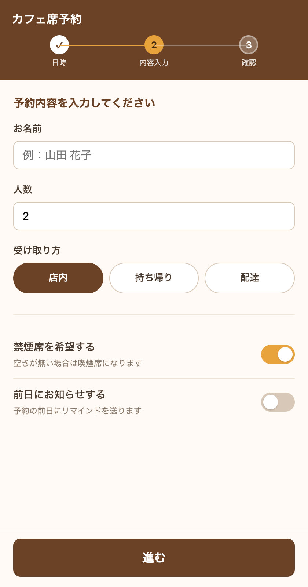
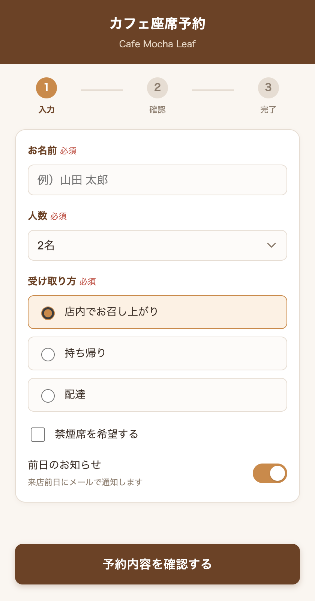

カフェの席の予約画面。ちがうのは、頼み方に部品の名前が入っているかどうかだけ。
「上に帯があって、今いくつめの手順か分かるようにして。名前と人数と受け取り方（店内・持ち帰り・配達）を入れられて、禁煙席がいいかどうかと、前の日にお知らせするかどうかも選べるようにして。最後に進むボタン」

1234「上にヘッダー、その下にステップ表示（入力→確認→完了、今は入力）。名前はテキストフィールド、人数はセレクトボックス、受け取り方はラジオボタン、禁煙席の希望はチェックボックス、前日のお知らせはトグルスイッチ。最後に『予約内容を確認する』のボタン」

1234| 名前を知らない頼み方 | 名前を入れた頼み方 | |
|---|---|---|
| ① | 手順を「日時→内容入力→確認」と勝手に作り、今は2つめ | 入力→確認→完了の、今は1つめ |
| ② | 人数は、数字を打ち込む欄 | 人数はセレクトボックスで選ぶ |
| ③ | 受け取り方は、横に並んだボタン | ラジオボタンで1つ選ぶ |
| ④ | 禁煙席はオン・オフのスイッチ | チェックボックスで印を付ける |